S&P Composite 1500 마켓온도
기준 거래일 2026-10-29 종가
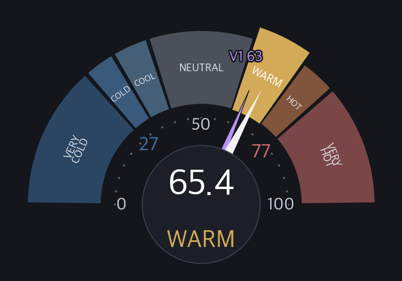
§0 · 판단층 — 매크로(마켓온도 스냅샷 · 칸마다 기준일) · FOMC(예측시장 · 조사시각) · 반전 종합
나스닥 100 29,402.51 -1.42% (등락 QQQ) 2026-10-29
VIX 17.20 +1.71% 2026-10-29
WTI 102.86 +0.08% 2026-10-29
美10Y 4.989% -1.11% 2026-10-29
美30Y 5.329% -0.60% 2026-10-29
DXY 101.91 -0.27% 2026-10-29
F&G 34.60 Fear 2026-10-29
§0a · 매크로 스트립 (LOCAL 실측 · 1년 내 위치 포함)
§W 위기 지표 종합 (US 시장 공통 / 6지수 같은 값 / 2026-10-29)
| No | 구분 | 지표 | 값 | 변화 | 단계 | 판정 | 기준일 |
|---|---|---|---|---|---|---|---|
| 1 | 변동성 | VIX | 17.20 | ▲ +1.7% | D 정상 | – | 2026-10-29 |
| 2 | 변동성 | SKEW | 148.74 | ▼ -0.3% | C 주의 | 높음 | 2026-10-28 |
| 3 | 변동성 | MOVE | 93.54 | ▼ -1.1% | D 정상 | – | 2026-10-29 |
| 4 | 신용 | HY OAS (업계) | 3.14% | ▼ -4bp | E 안일 | 좁음 확보 구간 백분위 11.3 / 위치 표기 (판정 아님) | 2026-10-28 |
| 5 | 신용 | HY OAS 1달 확대 속도 | +12bp | – | D 정상 | 보통 2026-09-28 대비 22봉 (평일 관측) | 2026-10-28 |
| 6 | 신용 | CCC−BB 질 분화 (하위 등급 스프레드 격차) | 11.23pp | ▼ -11bp | B 경고 | 크게 벌어짐 수준 11.23pp 벌어짐 / 1달 +160bp 확대 매우 빠름 (+150bp 이상) → 속도 기준 크게 벌어짐 / 2008-01-01 이후 백분위 93.2 = 위치 표기 | 2026-10-28 |
| 7 | 신용 | 크레딧 다이버전스 (자체) | MEDIUM (2/3 LH) | – | B 경고 | – | 2026-10-29 |
| 8 | 심리 | F&G (CNN) | 34.60 | ▲ +0.20 | C 주의 | 공포 | 2026-10-29 |
| 9 | 심리 | BofA Bull & Bear | 7.2 | ▼ -0.9 2주 전 대비 | D 정상 | 강세 | 2026-10-21 |
| 10 | 심리 | NixB&B (자체) | 4.72 | ▼ -0.20 | D 정상 | 중립 | 2026-10-29 |
| 11 | 시장 내부 | S&P 500 1년 고점 대비 낙폭 (SPY) | -1.57% | ▼ -0.38pp | E 안일 | 고점 근처 1년 고점 781.62 / 종가 769.36 | 2026-10-29 |
| 12 | 시장 내부 | 마켓온도 (자체 / Composite 1500 V2) | 65.43 | ▲ +1.1 | D 정상 | WARM | 2026-10-29 |
| 13 | 시장 내부 | 시장폭 (Composite 1500 상승 비율) | 77.26% | – 직전 값을 싣지 않음 | D 정상 | BULLISH | 2026-10-29 |
| 14 | 시장 내부 | 지수 양극화 (자체 / S&P500 vs 러셀2000) | 8.97 | – 직전 값을 싣지 않음 | D 정상 | 경미 우위 = 대형(S&P500) | 2026-10-29 |
| 15 | 금리와 여건 | NFCI (전미 금융여건지수) | -0.487 | ▲ +0.009 | 등급 없음 | 평균보다 루즈 | 2026-10-23 |
| 16 | 금리와 여건 | STLFSI4 (세인트루이스 금융스트레스지수) | -0.584 | ▲ +0.049 | 등급 없음 | 평균 이하 스트레스 | 2026-10-23 |
| 17 | 금리와 여건 | 장단기 금리차 (10년 − 3개월) | +0.99pp | ▼ -5.9bp | 등급 없음 | 비역전 | 2026-10-29 |
| 18 | 금리와 여건 | 美 10년 금리 | 4.989% | ▼ -5.6bp | 등급 없음 | 1년 범위 위치 73% (중립권) | 2026-10-29 |
| 19 | 금리와 여건 | 달러 지수 DXY | 101.91 | ▼ -0.27% | 등급 없음 | 1년 범위 위치 86% (1년고점권) | 2026-10-29 |
§1 · 온도 대시보드 (일 / 주 / 월)


§1-B&B · 온도·B&B 추이
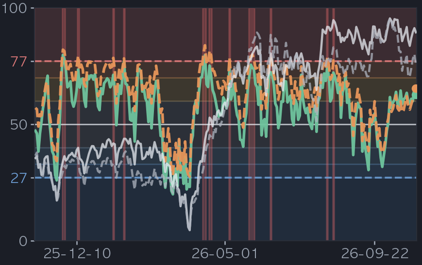
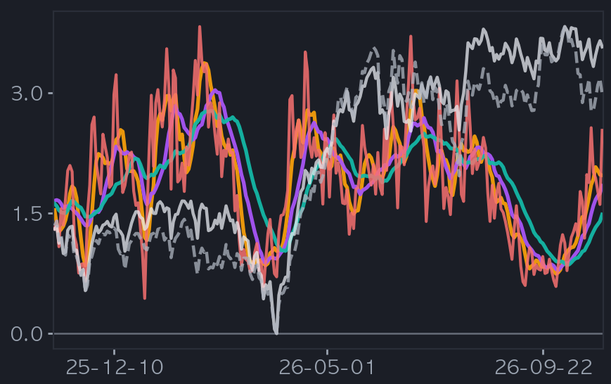
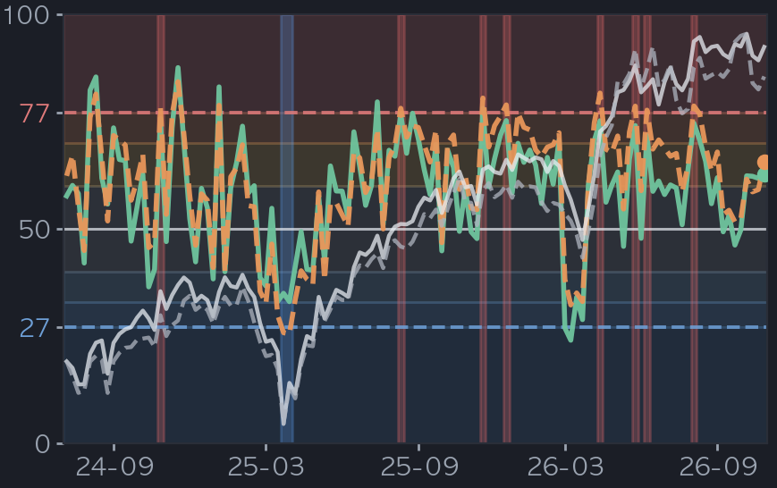
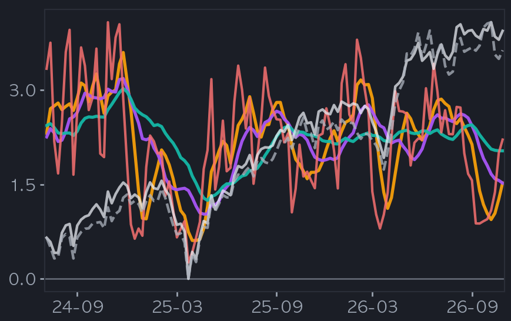
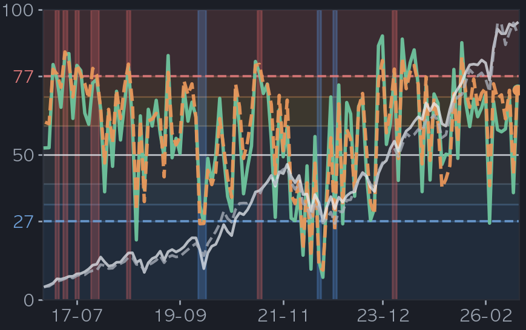
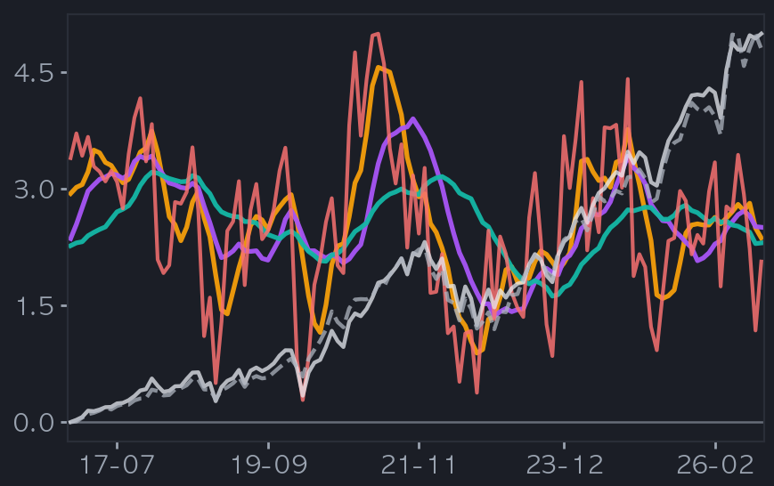
B&B 상세 — Count · Energy (일봉 · 옛 6패널 하단)
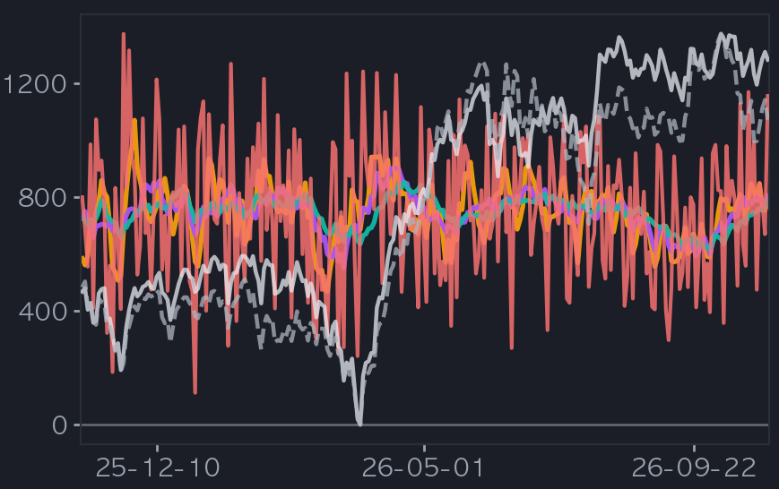
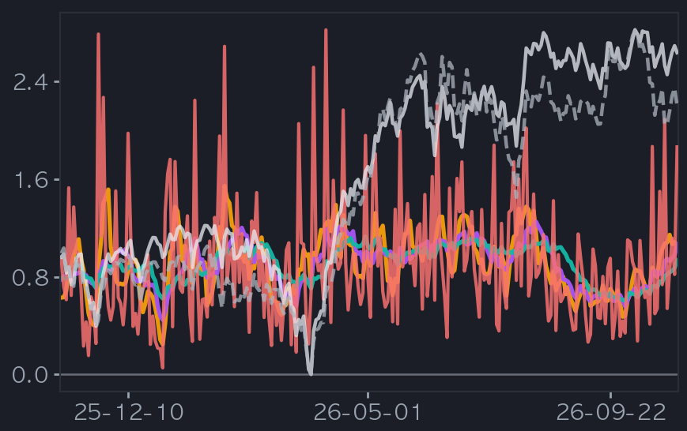
§1b · 5종 게이지 — 3축 비교 (가격 · 심리 · 포지셔닝)


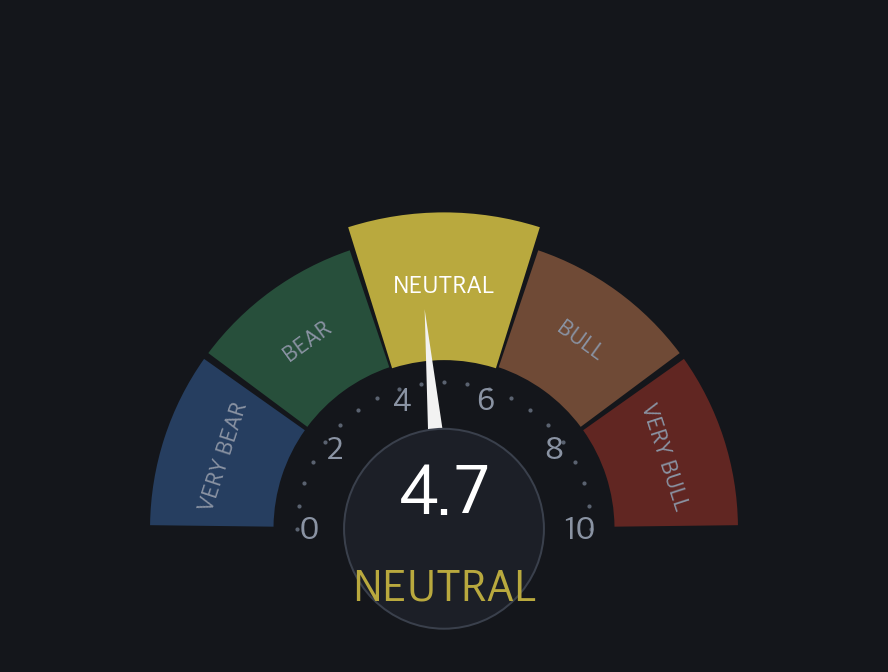
값 기준: 2008-01-01 이후 확장 백분위 / 포지셔닝 2010-06~ 확보분
글로벌 포지셔닝. US(4.72)와 2.48 괴리 = 글로벌 포지셔닝이 US보다 강함(글로벌 쏠림).
§1c · F&G 심리 궤적 (4시점) · 존별 반전 edge
| F&G 존 | 이후 상승 up% | edge(pp) | n | 표본 비중 |
|---|---|---|---|---|
| Extreme Fear(극단적 공포) | 100.0% | ▲ +21.7 | 41 | 16% |
| Fear(공포) ◀ 현재 | 93.2% | ▲ +14.9 | 88 | 35% |
| Neutral(중립) | 55.6% | ▼ -22.7 | 45 | 18% |
| Greed(탐욕) | 63.3% | ▼ -15.0 | 79 | 31% |
| baseline(조건 없음) | 78.3% | 0.0 | 253 | 100% |
§1d · 외부 게이지 발행처 규칙 · 우리 결론과 정합 점검
| 게이지 | 현재값 | 발행처 규칙 | 상태 | 발행처 근거 |
|---|---|---|---|---|
| CNN F&G 0~100 | 34.6 | 밴드 0–25 극단적 공포 / 25–45 공포 / 45–55 중립 / 55–75 탐욕 / 75–100 극단적 탐욕 — 극단 구간(<25 / ≥75) 진입이 역발상 관심 신호 | ○ 미발동 — 극단 구간 밖 | 발행처는 조건부 수익률·표본수·CI 를 발행하지 않음(F&G 의 알려진 약점) — 검증은 우리 §1c 존별 edge 표 |
| BofA B&B 0~10 | 7.2 | > 8.0 = 매도 신호 · < 2.0 = 매수 신호 · 신호 유효기간 통상 1~3개월 | ○ 미발동 — 2.0 ~ 8.0 (신호 없음) | 발행처 공표 근거 · 매도(>8) 17회 → 3개월 평균 −2~3% · 최대 −15~20% · 매수(<2, 2002~) 20회 → 3개월 중앙값 US +5.4% · 글로벌 +7.6% |
| NixB&B 0~10 | 4.72 | 🔒 자체 산식·가중 비공개 (값·등급 공개) | 판정 미표기 (자체 임계 🔒) | 자체 산출 — 발동 판정 미표기 · 외부 규칙 카운트의 분모에서 제외 |
§1e · 지수 간 상대강도 (Spread)
§2 · 지수 팬 — 고점/저점 목표 (4관점: ATR22·1달 / ATR54·분기 / ATR120·반기 / ATR245·년)
769.36
▲ +1.58% · +12.15
▲ +3.16% · +24.31
▲ +4.74% · +36.46
▼ -1.12% · -8.58
▼ -2.23% · -17.16
▼ -3.35% · -25.74
769.36
▲ +2.25% · +17.33
▲ +4.50% · +34.66
▲ +6.76% · +51.98
▼ -2.25% · -17.33
▼ -4.50% · -34.66
▼ -6.76% · -51.98
769.36
▲ +5.56% · +42.80
▲ +11.13% · +85.59
▲ +16.69% · +128.39
▼ -5.56% · -42.80
▼ -11.13% · -85.59
▼ -16.69% · -128.39
769.36
▲ +9.84% · +75.67
▲ +19.67% · +151.34
▲ +29.51% · +227.01
▼ -9.84% · -75.67
▼ -19.67% · -151.34
▼ -29.51% · -227.01
| 지평 | Sell 도달 | Buy 도달 | Sell 리드 | Buy 리드 | n |
|---|---|---|---|---|---|
| 1달·ATR22(비대칭) | 48.9% | 50.3% | 11.4일 | 7.4일 | 4694 |
| 분기·ATR54(대칭) | 60.5% | 41.7% | 24.9일 | 19.5일 | 4630 |
| 반기·ATR120(대칭) | 68.3% | 34.4% | 58.4일 | 42.1일 | 4498 |
| 년·ATR245(대칭) | 71.6% | 32.5% | 123.5일 | 98.7일 | 4248 |
① 전용 macro ATR = 지평 N봉 고저범위(집계봉)에 ATR — 1달 macroATR(22)=23.83(평활 5) · 분기 macroATR(54)=40.30(평활 12) · 반기 macroATR(120)=97.27(평활 22) · 년 macroATR(245)=154.43(평활 54) — 지평이 길수록 범위가 넓다.
② 온도 비대칭 배수 = 1달만 — 1달=macroATR(22,5)×온도 비대칭 배수(현재존 WARM sell×0.51/buy×0.36)·분기=macroATR(54,12)×대칭배수 → Sell 0.5~1.5× vs Buy -0.4~-1.1× ATR(현재존 배수).
③ ★분기·반기·년 = 대칭 median 배수(온도 보정 없음·sell=buy) = ±macroATR×배수×{1,2,3} — 분기 macroATR(54)=40.30 × ×0.43 · 반기 macroATR(120)=97.27 × ×0.44 · 년 macroATR(245)=154.43 × ×0.49.
④ 폭 순서 1달 < 분기 < 반기 < 년 (×1 띠 폭) — 어긋나면 그 지평은 ❌ 로 표시(값 지어내기 없음).
※ 배수 계수·산출 방식은 내부 알고리즘(비공개).
§3 · 시장 폭 (구성종목)
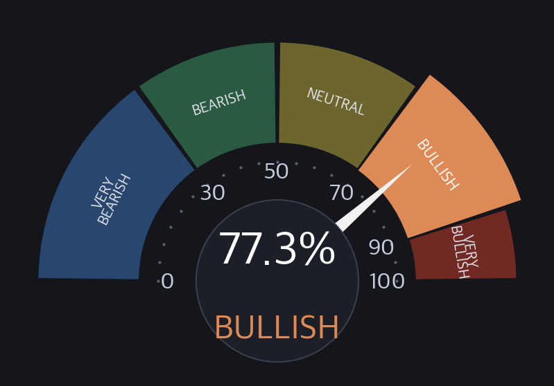
§V · 반전 · 검증 (지수 고점/저점 확률)
| 지평 | 상승/하락 | 상승 | 하락 | 기저·edge | 중앙값 | P10~P90 | 5%↓ | neff |
|---|---|---|---|---|---|---|---|---|
| h5 | 61% | 39% | 기저 60% ▲+1.0pp 우위 | +0.40 | -1.9~+1.9 | 1% | 232 | |
| h12 | 63% | 37% | 기저 65% ▼-2.0pp 열위 | +0.82 | -2.9~+3.0 | 7% | 96 | |
| h22 | 66% | 34% | 기저 68% ▼-2.0pp 열위 | +1.42 | -4.5~+4.2 | 14% | 52 | |
| h54 | 76% | 24% | 기저 76% ±0.0pp 동률 | +2.92 | -5.0~+7.2 | 26% | 21 | |
| 위기 제외 대조 — 현재존(WARM) 상승확률, 2008 GFC(2008-01~2009-06) · 2020 코로나(2020-02~2020-05) · 2022 긴축(2022-01~2022-12) 진입일 제외: h5 61% (포함시 61%) · h12 64% (포함시 63%) · h22 67% (포함시 66%) · h54 77% (포함시 76%) · n 1145 · 값이 비슷하면 위기 몇 번이 만든 숫자가 아니라는 뜻(AAII 관행) | ||||||||
§Score · 자기 성적표 — 온도반전 검출 O/X 채점 (규칙 사전 고정)
| 방법 · 방향 | 신호 n | 적중률 | Brier | Brier(기저) | BSS |
|---|---|---|---|---|---|
| M1 고정존 · 바닥(저점) | 77 | 77.9% | 0.183 | 0.183 | ▲+0.002 우위 |
| M1 고정존 · 고점 | 51 | 27.5% | 0.217 | 0.194 | ▼-0.117 열위 |
| M2 동적존 · 바닥(저점) | 77 | 77.9% | 0.183 | 0.173 | ▼-0.060 열위 |
| M2 동적존 · 고점 | 162 | 22.8% | 0.183 | 0.186 | ▲+0.014 우위 |
| 종합 (전 방법) | 367 | 46.6% | 0.188 | 0.184 | ▼-0.022 열위 |
.venv/bin/python3 scripts/nix_forecast_scorecard.py --indexes us1500 · 용어(Brier·BSS)·수식은 §G.§S · 3시나리오 — Bull / Base / Bear (트리거 · 확률 · 무효화)
| 시나리오 | 확률 | 목표·수준 | 파생 근거 |
|---|---|---|---|
| Bull — 상방 우세 | 36.6% 낮음기저 36.1%edge ▲+0.5pp 우위n 424(neff 19) | 795.6 (+3.41%) | 트리거: 1차 Sell 도달(위) · 1차 Buy 미이탈 — 1차 781.5 · 2차 793.7 · 창 22거래일 · 과거 WARM존 1160봉 중 424봉 · 도달 중앙 13일 |
| Base — 팬 내 횡보 | 26.5% 낮음기저 27.4%edge ▼-0.9pp 열위n 307(neff 13) | 782.2 (+1.67%) | 트리거: 양방 미도달(횡보) 또는 양방 도달(왕복·방향 미확정) · 창 22거래일 · 과거 WARM존 1160봉 중 307봉 |
| Bear — 하방 우세 | 37% 낮음기저 36.5%edge ▲+0.5pp 우위n 429(neff 19) | 754.6 (-1.92%) | 트리거: 1차 Buy 이탈(아래) · 1차 Sell 미도달 — 1차 760.8 · 2차 752.2 · 창 22거래일 · 과거 WARM존 1160봉 중 429봉 · 도달 중앙 6일 |
- 레짐 교체 (반전 발화) — 정량층은 지금 존이 유지된다는 전제 위에 서 있다 — V2 가 고점선·바닥선을 넘어 반전이 발화하면 조건부 표본 자체가 다른 존으로 갈아끼워진다 · 트리거: V2 65.43 → 고점선 77 까지 +11.6 · 바닥선 27 까지 -38.4
- 시간축 이탈 — 일·주·월이 한 방향으로 모이면 Base(횡보) 비중이 줄고 방향 시나리오로 쏠린다 — 갈려 있으면 방향 판정이 지연된다 · 트리거: 일 WARM · 주 WARM · 월 HOT (Δ 일 +1.11 · 주 +6.39 · 월 +29.07)
- 변동성 레짐 확대 — 팬 폭 자체가 변동성에 비례한다 — 같은 결과 비율이라도 도달해야 할 레벨이 멀어지고 Base 구간이 물리적으로 넓어진다 · 트리거: macroATR(22) 23.83 = 종가 대비 3.1%
| 판정 | 무효화 조건 (관측치, 임계, 지속) | 현재 ↔ 문턱 거리 | 확인 시점, 주기 | 틀리면 — 상정 손실, 조치 |
|---|---|---|---|---|
| Bull (상방 우세) | 창 22거래일 안에 고가가 1차 Sell 781.5 미도달 · 또는 저가가 1차 Buy 760.8 를 먼저 이탈 | 781.5 (+1.58%) | 매 거래일 종가 · 창 만료 22거래일차 · 과거 도달 중앙 13일 | Bear 경로 실현 시 과거 동일 결과의 22일 뒤 종가 중앙 -1.92% (1차 Buy 760.8) |
| Base (팬 내 횡보) | 1차 Sell 781.5 또는 1차 Buy 760.8 중 한쪽 도달(먼저 닿는 쪽) | 위 781.5 (+1.58%) / 아래 760.8 (-1.12%) | 매 거래일 종가 · 창 만료 22거래일차 | 횡보 전제 폐기 — 도달한 방향 시나리오로 전환(가중 기대값 재산출) |
| Bear (하방 우세) | 창 22거래일 안에 저가가 1차 Buy 760.8 미이탈 · 또는 고가가 1차 Sell 781.5 을 먼저 도달 | 760.8 (-1.12%) | 매 거래일 종가 · 창 만료 22거래일차 · 과거 도달 중앙 6일 | Bull 경로 실현 시 과거 동일 결과의 22일 뒤 종가 중앙 +3.41% (1차 Sell 781.5) |
| 공통 전제 (현재 존 WARM) | V2 가 현재 밴드 WARM 60–70 를 이탈 — 고점선·바닥선 돌파 시 반전 발화 | 고점선 77 까지 +11.6 · 바닥선 27 까지 -38.4 | 매 거래일 온도 갱신 | 정량층의 조건부 전제(현재 존 표본)가 무효 — 새 존 표본으로 확률 재산출 |
Base 내역: 양방 미도달(횡보) 152봉 · 양방 도달(왕복) 155봉. 제외: 온도·존배수 미확보 0봉 · ATR 미확보 0봉. §2 도달률 백테(sell/buy 독립 집계·전체 배수)와 n 이 다른 이유는 여기가 상호배타 3분류 + 그날 존 배수이기 때문입니다. 용어·수식은 §G.
§7 · 종합 판정
S&P Composite 1500 WARM V2 65.4℃ · V1 62.7℃ · 고점 = 조정 경계 — 온도 고점 후 평균회귀(주로 장기).
1차 고점 +1.58% / 1차 저점 -1.12%. 현재존 기대수익 +0.46% (전 존 최저·dim). 강건성 완전 통계가중.
포지셔닝 컨텍스트(US 공통·스냅샷 파생 · 기준 2026-10-29): F&G 34.6 · NixB&B 4.72/10 (US) · BofA 7.2/10 (글로벌)
2026-10-21 D+8
가격·심리·포지셔닝 다른 축.
• 장기(h54) 관점: 매도 관점 우위 (조정 경계) — 상승 76% / 하락 24% · 과열권(WARM) + 고점 지속 신호 없음 → 평균회귀 조정 위험 · 상방 여력 약함(dim)
→ 종합 스탠스: 매도 관점 우위 (조정 경계)
과열은 타이밍 신호가 아님(WARM 존 기대수익 최저 +0.46%). 확률적 참고 — 투자권유(매수·매도·비중) 아님.
■ 읽는 법 (고점/저점 판단법)
온도 V1/V2: 가격 과열/과냉 0~100℃. 높을수록 뜨겁·후행. V2 낮을수록 저점권·높을수록 고점권.
팬(Sell/Buy): 우리 방법론이 본 고점(Sell·위)/저점(Buy·아래) 목표. 1차=median(≈50% 도달)·×3=최대. ★Sell·Buy 1차 모두 median이라 %거리 차이는 방향 신호 아님(대응책은 존·고점거동으로 판단).
완전 통계가중 vs 방향 참고: 온도 존이 향후 낙폭을 순서대로 나누는지 3조건 검증. 다 통과=완전 통계가중, 하나라도 미달=방향+coarse만.
고점 지속 vs 조정 경계: 온도 고점 후 반응. 지속 = 매도 신호 아님(bull premium) / 조정 경계 = 고점 뒤 평균회귀(조정 위험).
스탠스(관점 우위): 매수 관점 우위 = 과냉권 → 저점 반등 여지 / 매도 관점 우위 (조정 경계) = 과열권 + 고점 지속 신호 없음 → 평균회귀 조정 위험 — 매도 쪽 관점이 우세하다는 뜻('매도를 경계하라' 아님 · 매도 권유 아님) / 관망 = 과열이나 고점 지속(bull premium) · 중립 · 고점 거동 미확보.
전방 확률: 현재 온도존일 때 과거 h봉 뒤 상승 비율(50%=동전). 예측 아니라 조건부 빈도. neff 가 적으면 소표본(기준은 §G neff).
마인드셋: 점쟁이 아니라 일기예보 — 방향보다 위험 크기. 확률이지 확정 아님. 투자권유(매수·매도·비중) 아님.
■ 이 리포트 적용값 (수식 대입 · 실측)
| 등급 | 색 | 의미 |
|---|---|---|
| A 위기 | ■ 빨강 | 패닉 (위험) |
| B 경고 | ■ 주황 | 공포 또는 스트레스 구간 |
| C 주의 | ■ 금 | 평소보다 높음, 지켜볼 것 |
| D 정상 | ■ 초록 | 평소 수준 |
| E 안일 | ■ 파랑 | 너무 평온함 (방심 주의) |
| 판정 대상 아님 | ■ 회색 | 판정 조건 미충족 (등급 개수에 넣지 않음) |
| 등급 | 단계 | 구간 | 의미 | 오늘 |
|---|---|---|---|---|
| E 안일 | 안일 | 12 미만 | 낮은 공포 = 안일 (과열 쪽 / 역발상 주의) | |
| D 정상 | 정상 | 12 이상 20 미만 | 평균 수준 변동성 (로컬 2008~ 중앙값 17.4 / 평균 19.9) | ◀ 17.20 |
| C 주의 | 주의 | 20 이상 30 미만 | 불안 고조 (평균 위) | |
| B 경고 | 경고 | 30 이상 40 미만 | 공포 구간 (여러 해설서 공통 공포선 30) | |
| A 위기 | 위기 | 40 이상 | 패닉 (2008 종가 최고 80.9 / 장중 89.5 / 2020 종가 최고 82.7) |
| 등급 | 단계 | 구간 | 의미 | 오늘 |
|---|---|---|---|---|
| E 안일 | 낮음 | 124 미만 | 꼬리 헤지 수요 적음 | |
| D 정상 | 보통 | 124 이상 146 미만 | 평소 수준 꼬리 헤지 (2016~ 중앙값 135.7) | |
| C 주의 | 높음 | 146 이상 156 미만 | 꼬리 헤지 수요 큼 (2016~ 상위 20% 안쪽) | ◀ 148.74 |
| C 주의 | 매우 높음 | 156 이상 | 꼬리 헤지 수요 매우 큼 (하락 예측력은 약함) |
| 등급 | 단계 | 구간 | 의미 | 오늘 |
|---|---|---|---|---|
| E 안일 | 안정 | 80 미만 | 채권시장 평온 (80 미만 / 로컬 2008~ 중앙값 79.0) | |
| D 정상 | 정상 | 80 이상 100 미만 | 평균 수준 (로컬 2008~ 평균 86.3) | ◀ 93.54 |
| C 주의 | 주의 | 100 이상 120 미만 | 채권 변동성 높음 | |
| B 경고 | 경고 | 120 이상 150 미만 | 채권시장 스트레스 | |
| A 위기 | 위험 지속 | 150 이상 | 지수 창시자: 150 위 = 위험 지속 (2008 종가 최고 264.6 / 2023-03 장중 최고 198.7) |
| 등급 | 단계 | 구간 | 의미 | 오늘 |
|---|---|---|---|---|
| E 안일 | 매우 좁음 | 3% 미만 | 역사적 타이트 = 신용 위험 가격 매우 낮음 (안일) | |
| E 안일 | 좁음 | 3% 이상 4% 미만 | 타이트 = 장기 평균 5.25% 보다 낮음 (안일 쪽) | ◀ 3.14% |
| D 정상 | 보통 | 4% 이상 5.5% 미만 | 장기 평균권 (평균 525bp) | |
| C 주의 | 주의 | 5.5% 이상 6.5% 미만 | 평균 위 = 스프레드 확대 (침체선 800bp 아래) | |
| B 경고 | 경고 | 6.5% 이상 8% 미만 | 신용 스트레스 (평균 5.25 와 침체선 8.0 의 중간 위) | |
| A 위기 | 위기 | 8% 이상 10% 미만 | 침체 기준선 800bp 위 | |
| A 위기 | 극단 | 10% 이상 | 1,000bp 위 = 1990-91 / 2001 / 2008-09 / 2020 침체에서 돌파 (2008 고점 2,147bp) |
| 등급 | 단계 | 구간 | 의미 | 오늘 |
|---|---|---|---|---|
| D 정상 | 보통 | +50bp 미만 | 1달 확대가 평소 범위 (축소 포함) | ◀ +12bp |
| C 주의 | 확대 빠름 | +50bp 이상 +100bp 미만 | 위험 재가격 시작 (HY 수준이 낮을수록 의미가 큼) | |
| B 경고 | 확대 매우 빠름 | +100bp 이상 | 빠른 신용 스트레스 (근거 약함 / 상태 표시) |
| 등급 | 단계 | 구간 | 의미 | 오늘 |
|---|---|---|---|---|
| E 안일 | 압축 | 수준 4.7pp 미만 (1달 +100bp 미만) | 수준이 사이클 저점 쪽이고 1달 확대도 평소 범위 (방심 주의) | |
| D 정상 | 보통 | 수준 4.7pp 이상 8pp 미만 (1달 +100bp 미만) | 수준과 1달 변화 모두 평소 범위 | |
| C 주의 | 벌어짐 | 수준 8pp 이상 15pp 미만 / 또는 1달 +100bp 이상 +150bp 미만 | 수준이 벌어졌거나 1달 확대가 빠름 (상태 표시) | |
| B 경고 | 크게 벌어짐 | 수준 15pp 이상 / 또는 1달 +150bp 이상 | 수준이 크게 벌어졌거나 1달 확대가 매우 빠름 (근거는 2008 금융위기와 2020 코로나 급락에 기댐) | ◀ 11.23pp |
| 등급 | 단계 | 구간 | 의미 | 오늘 |
|---|---|---|---|---|
| D 정상 | NONE | 신용 ETF 3종 중 고점 하락 0개 | 다이버전스 없음 | |
| C 주의 | WEAK | 신용 ETF 3종 중 고점 하락 1개 | SPY 고점 상승 + 신용 ETF 1/3 고점 하락 = 약한 다이버전스 | |
| B 경고 | MEDIUM | 신용 ETF 3종 중 고점 하락 2개 | SPY 고점 상승 + 신용 ETF 2/3 고점 하락 = 신용 시장 경고 | ◀ MEDIUM (2/3 LH) |
| A 위기 | STRONG | 신용 ETF 3종 중 고점 하락 3개 | SPY 고점 상승 + 신용 ETF 3/3 고점 하락 = 4~8주 선행 하락 위험 | |
| 판정 대상 아님 | — | SPY 고점 상승 아님 | SPY 고점 상승 아님 = 다이버전스 판정 조건 미충족 |
| 등급 | 단계 | 구간 | 의미 | 오늘 |
|---|---|---|---|---|
| B 경고 | 극단적 공포 | 25 미만 | 공포 극단 (투매 심리) | |
| C 주의 | 공포 | 25 이상 45 미만 | 공포 우위 | ◀ 34.60 |
| D 정상 | 중립 | 45 이상 55 미만 | 공포와 탐욕 균형 | |
| D 정상 | 탐욕 | 55 이상 75 미만 | 탐욕 우위 | |
| E 안일 (과열) | 극단적 탐욕 | 75 이상 | 탐욕 극단 (방심 주의) |
| 등급 | 단계 | 구간 | 의미 | 오늘 |
|---|---|---|---|---|
| B 경고 | 극단 약세 (매수권) | 2 미만 | 심리 극단 약세 | |
| C 주의 | 약세 | 2 이상 4 미만 | 약세 심리 | |
| D 정상 | 중립 | 4 이상 6 미만 | 중립 심리 | |
| D 정상 | 강세 | 6 이상 8 이하 | 강세 심리 | ◀ 7.2 |
| E 안일 (과열) | 극단 강세 (매도권) | 8 초과 | 심리 극단 강세 = 과열 (방심 주의) |
| 등급 | 단계 | 구간 | 의미 | 오늘 |
|---|---|---|---|---|
| B 경고 | 극단 약세 (매수권) | 2 이하 | 심리 극단 약세 | |
| C 주의 | 약세 | 2 초과 4 미만 | 약세 심리 | |
| D 정상 | 중립 | 4 이상 6 미만 | 중립 심리 | ◀ 4.72 |
| D 정상 | 강세 | 6 이상 8 미만 | 강세 심리 | |
| E 안일 (과열) | 극단 강세 (매도권) | 8 이상 | 심리 극단 강세 = 과열 (방심 주의) |
| 등급 | 단계 | 구간 | 의미 | 오늘 |
|---|---|---|---|---|
| A 위기 | 금융위기급 폭락 | 40% 이상 하락 | 시장 붕괴 수준 / 예 2009-03-09 -52.80% (금융위기) | |
| A 위기 | 심한 약세장 | 30% 이상 40% 미만 하락 | 깊어진 약세장 / 예 2020-03-23 -34.25% (코로나 급락) | |
| B 경고 | 약세장 | 20% 이상 30% 미만 하락 | 업계가 말하는 약세장 / 예 2022-10-12 -25.71% (금리 인상기) | |
| C 주의 | 조정 | 10% 이상 20% 미만 하락 | 업계가 말하는 조정 / 예 2025-04-08 -19.04% (관세 충격) | |
| D 정상 | 눌림 | 3% 이상 10% 미만 하락 | 흔한 눌림 / 예 2024-08-05 -8.45% | |
| E 안일 | 고점 근처 | 3% 미만 하락 | 1년 고점 부근 (방심 주의) | ◀ -1.57% |
| 등급 | 단계 | 구간 | 의미 | 오늘 |
|---|---|---|---|---|
| A 위기 | VERY COLD | 27 미만 | 과냉 = 위험 회피 극단 | |
| B 경고 | COLD | 27 이상 33 미만 | 한랭 = 위험 회피 강함 | |
| C 주의 | COOL | 33 이상 40 미만 | 냉각 = 위험 회피 우위 | |
| D 정상 | NEUTRAL | 40 이상 60 미만 | 중립 = 평소 수준 | |
| D 정상 | WARM | 60 이상 70 미만 | 온난 = 위험 선호 우위 | ◀ 65.43 |
| E 안일 (과열) | HOT | 70 이상 77 미만 | 과열 = 위험 선호 강함 (방심 주의) | |
| E 안일 (과열) | VERY HOT | 77 이상 | 극과열 = 위험 선호 극단 (방심 주의) |
| 등급 | 단계 | 구간 | 의미 | 오늘 |
|---|---|---|---|---|
| B 경고 | VERY BEARISH | 30% 미만 | 약세 종목 쏠림 극단 | |
| C 주의 | BEARISH | 30% 이상 50% 미만 | 약세 종목 우위 | |
| D 정상 | NEUTRAL | 50% 이상 70% 미만 | 강약 균형 | |
| D 정상 | BULLISH | 70% 이상 90% 미만 | 강세 종목 우위 | ◀ 77.26% |
| E 안일 (과열) | VERY BULLISH | 90% 이상 | 강세 종목 쏠림 극단 (방심 주의) |
| 등급 | 단계 | 구간 | 의미 | 오늘 |
|---|---|---|---|---|
| D 정상 | 동조 | 8 미만 | 두 지수 같은 흐름 | |
| D 정상 | 경미 | 8 이상 16 미만 | 약한 차이 | ◀ 8.97 |
| C 주의 | 부분 양극화 | 16 이상 26 미만 | 뚜렷한 차이 (차별화 장세) | |
| B 경고 | 심한 양극화 | 26 이상 | 극단 차이 (쏠림 장세) |
| 구간 | 상태 | 의미 | 오늘 |
|---|---|---|---|
| 0 미만 | 평균보다 루즈 | 금융여건이 장기 평균보다 느슨함 | ◀ -0.487 |
| 0 | 역사 평균(0) | 장기 평균과 같음 | |
| 0 초과 | 평균보다 타이트 | 금융여건이 장기 평균보다 빡빡함 |
| 구간 | 상태 | 의미 | 오늘 |
|---|---|---|---|
| 0 미만 | 평균 이하 스트레스 | 금융 스트레스가 평균보다 낮음 | ◀ -0.584 |
| 0 | 정상(0) | 평균 수준 스트레스 (발행기관 규약의 0 / 등급 D 정상과는 다른 말) | |
| 0 초과 | 평균 이상 스트레스 | 금융 스트레스가 평균보다 높음 |
| 구간 | 상태 | 의미 | 오늘 |
|---|---|---|---|
| 0pp 미만 | 역전 | 장기 금리가 단기보다 낮음 (침체 선행으로 연구된 모양) | |
| 0pp | 같음 (0) | 장기와 단기 금리가 같음 | |
| 0pp 초과 | 비역전 | 장기 금리가 단기보다 높음 (보통 모양) | ◀ +0.99pp |
| 1년 범위 위치 | 상태 | 의미 | 오늘 |
|---|---|---|---|
| 25% 미만 | 1년저점권 | 1년 가격 범위의 아래쪽 4분의 1 (0% = 1년 저점) | |
| 25% 이상 75% 이하 | 중립권 | 1년 가격 범위의 가운데 절반 | ◀ 美 10년 금리 73% |
| 75% 초과 | 1년고점권 | 1년 가격 범위의 위쪽 4분의 1 (100% = 1년 고점) | ◀ 달러 지수 DXY 86% |
§G 읽는 법 (용어, 수식, 레퍼런스 = 공통 SSOT copy / 사용한 항목만)
◆ 용어정의
| 용어 | 정의 | 의미 | 구분 |
|---|---|---|---|
| 단위 읽는 법 (% / pp / 점수 차이) | % = 비율, 변화율(나눗셈: 오늘 ÷ 어제 − 1, 예 +1.20%). pp = 백분율끼리의 차이(뺄셈: 적중 92% − 기저 51% = +41pp). 점수 차이 = 0~100 점수(온도, F&G 등)끼리의 차이는 단위 없이 숫자만(예: 고점선 77 까지 +3.2). '%p', 'p' 를 붙이지 않는다. | % 는 얼마나 '비율로' 변했나, pp 는 퍼센트끼리 '뺀' 차이, 온도처럼 점수끼리의 차이는 그냥 숫자. | 자체 |
| 생존편향 (survivorship bias) | 현재 상장 종목만으로 과거를 백테스트하면 상폐로 끝난 케이스가 표본에서 빠져 조건부 확률이 부풀고 위험이 감춰진다(Shumway 1997 — CRSP 상폐 결측수익률 편향). 지수, 자산 가격 시계열은 그 시점 실측 기록(PIT)이라 무관. 유형별 판정은 자체 생존편향 감사 리포트 참조. | '떨어져도 결국 오르더라'는 살아남은 종목만 본 착시일 수 있다 — 사라진 종목은 데이터에 없다. | 외부 |
| V1 / V2 | V1=6팩터(US)/10팩터(KR), V2=9팩터(US)/11팩터(KR)(등급 기준). 자체 지표, 산식은 비공개(값, 등급, 검증만 공개). | 온도를 재는 두 버전. V2가 등급 판정 기준. | 자체 |
| 온도 존 7단 | VERY COLD<27 / COLD 27~33 / COOL 33~40 / NEUTRAL 40~60 / WARM 60~70 / HOT 70~77 / VERY HOT≥77 | 온도를 7구간으로 나눈 이름표. COLD=싸짐, HOT=비쌈. | 자체 |
| armed | 반전 신호 켜짐(트리거 조건 도달). 미armed=대기. | 반전 신호가 켜졌나(켜짐=armed). | 자체 |
| M1 고정존 | 반전 방법①. 27/77 고정 문턱으로 과냉, 과열을 판정. | 정해진 눈금(27·77)을 넘으면 반전 후보로 보는 방법. | 자체 |
| M2 동적존 | 반전 방법②. ZigZag 스윙 고, 저점에서 역산한 동적 문턱(표본 외 OOS 검증). | 과거 실제 꼭지, 바닥에서 거꾸로 계산한 눈금을 쓰는 방법. | 자체 |
| bull premium | 온도 고점 후에도 상승이 이어지는 거동 = 고점이 매도 신호가 아님. | 뜨거워도 더 오르던 장. 고점=팔 때가 아니라는 뜻. | 자체 |
| 조정 경계 | 온도 고점 후 평균회귀(하락)가 우세한 고점 거동(sell_signal). 고점 지속(bull premium) 신호가 없어 조정 위험이 큰 상태. | 뜨거워진 뒤 되돌아온 경우가 더 많았던 장. 고점에서 조정(하락)을 조심하라는 뜻. | 자체 |
| 관점 우위(스탠스) | 온도존과 고점 거동으로 정한 확률적 관점. 매수 관점 우위 = 과냉권(VERY COLD, COLD, COOL) → 저점 반등 여지. 매도 관점 우위 (조정 경계) = 과열권(WARM, HOT, VERY HOT) + 고점 지속 신호 없음 → 평균회귀 조정 위험. 관망 = 과열이나 고점 지속(bull premium), 중립, 고점 거동 미확보. 매수, 매도 권유가 아님. | 지금 온도에서 과거에 어느 쪽(반등 / 조정)이 더 많았는지로 본 관점. '매도 관점 우위' 는 매도를 경계하라는 뜻이 아니라 조정 쪽 위험이 더 크다는 뜻. | 자체 |
| 팬(1~3차) | 1차=median(≈50% 도달), 3차=최대 폭. 고점, 저점 %거리 차이는 방향 신호 아님. | 현재가에서 위/아래로 얼마나 갈 수 있는지 3단계 목표. | 자체 |
| macroATR(22/54) | 전용 매크로 변동성. 22봉(1달), 54봉(분기) 집계 고, 저, 종가의 ATR. 지평 규모를 반영. | 그 기간에 시장이 보통 얼마나 흔들렸는지의 폭. | 외부 |
| ret | 해당 구간 끝 시점의 평균 수익률(%). | 그 구간이 끝났을 때 평균 몇 % 였나. | 외부 |
| dd | 해당 구간 보유 중 최저점까지의 평균 낙폭(MDD, %). ret 과 순서가 아니라 같은 구간의 두 측정. | 그 구간 중 가장 많이 빠졌을 때의 폭. | 외부 |
| n(표본수) | 검증에 쓴 신호 발화 횟수. n<30(또는 20)=소표본⚠️ 신뢰 하향. | 몇 번 검증했나. 적으면 우연일 수 있음. | 외부 |
| neff(유효 표본, 겹침 보정) | 겹치는 창(overlapping window)의 자기상관을 보정한 유효 표본 수. neff<20 = 소표본(⚠︎). | 겹쳐 센 표본을 걷어낸 실제 표본 수. 적으면 우연일 수 있음. | 외부 |
| 95% CI | 블록 부트스트랩으로 만든 신뢰구간. 넓을수록 불확실. | 참값이 들어있을 만한 범위. 넓으면 그만큼 덜 확실. | 외부 |
| 기저(base) | 조건 없이 전 구간에서 오른 비율(%). edge 를 재는 기준선. | 아무 신호 없이 그냥 샀을 때 오를 확률. | — |
| edge(pp) | 신호 적중률 − 무조건 기저 적중률(pp). 기간(horizon)은 표시처별 — 반전 확률 42거래일 / 그 밖(에지 DB, 온도 반전 등)은 소스의 h 표기(h5/h12/h22/h54…). +면 무작위보다 우위. | 이 신호가 그냥 찍는 것보다 얼마나 더 맞나(pp). 클수록 강함 / 기간은 표시처 표기를 따름. | 자체 |
| hit(적중률) | 신호 발화 후 예측 방향으로 간 비율(%). 50%=동전. | 신호가 맞은 비율. | 외부 |
| verified(검증됨) | 백테스트에서 edge>0, CI 통과한 방법. CI 미통과, edge 없음=방향 참고만. | 과거 데이터로 실제 맞는지 확인된 신호. | 자체 |
| dim | 현재 존의 기대수익이 전 존 중 최저 = 상방 여력이 가장 약한 국면. | 지금 구간이 과거 통계상 가장 재미없던 구간. | 자체 |
| 완전 통계가중 | 강건성 3조건(존별 낙폭 단조성, 극단존 CI 비중첩, 문턱 25격자 단조)을 모두 통과 → 존을 확률 가중치로 사용 가능. | 검증 3개를 다 통과 = 숫자 크기까지 믿고 써도 되는 상태. | 자체 |
| 방향 참고 | 강건성 3조건 중 일부 미달 → 존의 방향만 쓰고 크기는 신뢰하지 않음. | 검증이 덜 됨 = 방향만 참고하고 크기는 믿지 말 것. | 자체 |
| 시장폭(폭) | 그날 오른 종목 비율(%). 등급 90 이상 VERY BULLISH, 70 이상 BULLISH, 50 이상 NEUTRAL, 30 이상 BEARISH, 30 미만 VERY BEARISH. 낮으면 소수 주도(좁은 강세). | 오른 종목이 전체의 몇 %인가. 낮으면 몇 종목만 올리는 좁은 장. | 외부 |
| horizon h | 앞으로 h 거래일 뒤를 본다는 뜻. h5≈1주 / h12≈2~3주 / h22≈1달 / h54≈2.5달. | 며칠 뒤를 보고 재는지. | — |
| F&G (공포, 탐욕) | CNN Fear & Greed Index(0~100). 심리 축 — 가격 축(온도)과 다른 축. | 사람들이 지금 겁먹었나 들떴나를 0~100 으로. | 외부 |
| NixB&B | US 자금, 포지셔닝 종합(0~10). 자체 산출 — 구성, 가중 비공개. | 미국 돈이 얼마나 위험자산 쪽에 쏠려 있나(0~10). | 자체 |
| BofA B&B | BofA 글로벌 Bull&Bear 지표(0~10). 글로벌 포지셔닝 축. | 전 세계 투자자가 강세 쪽인지 약세 쪽인지(0~10). | 외부 |
| F&G 밴드 | CNN 이 공개한 F&G 구간 구분. 0–25 극단공포 / 25–45 공포 / 45–55 중립 / 55–75 탐욕 / 75–100 극단탐욕. 7개 컴포넌트 동일가중. | 공포, 탐욕 점수를 5칸으로 나눈 눈금. | 외부 |
| F&G 4시점 비교 | 현재 값을 전일, 1주 전, 1개월 전, 1년 전과 나란히 놓는 CNN 공식 제시 포맷. 레벨이 아니라 방향(회복/악화)을 읽기 위한 장치. | 지금 값만 보지 말고 어제, 지난주, 한달전, 작년과 나란히 놓고 어디서 왔는지 보는 것. | 외부 |
| F&G 존별 반전 edge | F&G 각 존에 있었던 과거 시점 이후 실제로 오른 비율(up%)과 조건 없는 기저 대비 초과분(edge pp), 표본수 n. 자체 백테스트 결과이며 예측이 아니라 조건부 빈도. | 공포, 탐욕 칸마다 그 뒤에 실제로 올랐던 비율. 그냥 샀을 때보다 몇 pp 더 맞았나가 edge. | 자체 |
| 1년 내 위치(%) | 최근 1년 고저 범위에서 현재 값이 놓인 백분위. 0%=1년 저점, 100%=1년 고점. 레벨만으로 보이지 않는 상대 위치를 드러낸다. | 최근 1년 최저~최고 사이에서 지금이 몇 % 지점인지. | 외부 |
| 발행처 규칙(외부 게이지) | 지표를 만든 곳이 스스로 공표한 임계, 신호 규칙(예: BofA B&B > 8.0 매도 / < 2.0 매수, 유효기간 1~3개월). 우리 판정과는 별개 축이며 공개 정보다. | 그 지표를 만든 회사가 정해 놓은 사용법. | 외부 |
| 규칙 발동 | 현재 값이 발행처 규칙의 임계 구간에 들어간 상태. 발동은 그 발행처 기준의 신호일 뿐 우리 결론이 아니다. 자작 게이지는 발동 판정을 표기하지 않는다(산식, 가중 비공개). | 그 지표 기준으로는 신호가 켜진 상태. 우리 결론과는 별개. | 외부 |
| 레벨 vs 방향전환 | 값이 높다는 사실(레벨)과 값이 꺾여 내려온다는 사실(방향전환)을 분리해 읽는 해석 규약. 위험선호 지표는 높은 값 자체가 반전 신호가 아니고 꺾일 때 위험이 커진다(GS RAI 규약). | 높다고 바로 위험이 아니라, 높다가 꺾일 때가 위험. | 외부 |
| 매크로 스트립 | VIX, MOVE, SKEW, 금리, 환율(KRW), 크레딧 등 외부 환경 지표. 온도의 배경 조건. | 시장 바깥 환경(변동성, 금리, 환율) 한 줄 요약. | 외부 |
| 자기 성적표 (채점 규칙 사전 고정) | 자기 신호의 검출 이력을 사전 고정 규칙(대상 판정, 창, 성공 정의, 벤치마크)으로 채점해 스스로 발간하는 절. 예측확률은 각 검출 시점 이전 이력만 쓰는 walk-forward 누적 적중률(look-ahead 없음). | 채점 규칙을 미리 못박아 두고 우리 신호의 성적을 우리가 먼저 공개 — 규칙을 안 정하면 남이 유리한 구간만 골라 채점한다. | 외부 |
| Brier 점수 | 확률 예보의 정확도 = mean((예측확률 − 실현 0/1)²). 0에 가까울수록 좋음(0=완벽, 0.25=항상 50% 예보 수준). 기상 예보 검증의 표준 채점 규칙. | 확률로 말한 예보가 실제 결과와 얼마나 가까웠는지 매기는 점수 — 낮을수록 잘 맞힌 것. | 외부 |
| BSS (Brier Skill Score) | 1 − Brier(모델)/Brier(기저). 0보다 크면 '기저율만 답하는 무지성 예보'보다 우수, 0 이하면 열위 — edge(pp)의 확률 버전. | 그냥 평균 승률만 외치는 예보보다 얼마나 나은가. 플러스면 더 낫고 마이너스면 못한 것. | 외부 |
| 소표본 3단 규칙 | neff(없으면 n) 기준 — 10 미만 = 값 억제(표본 부족 배지만) / 10~29 = 값+⚠️소표본 배지 / 30 이상 = 정상. 적중 100%/0% 는 rule of three, Wilson 95% 구간으로 대체 표기(통계 공개 통제 관행 준용). | 검증 횟수가 10번 미만이면 숫자를 안 보여주고, 10~29번이면 경고 딱지를 붙입니다. | 외부 |
| O / △ / X | 과거 검출 결과. O=성공 / △=진행 중 / X=실패. | 지난 신호가 맞았나(O), 아직 진행중(△), 틀렸나(X). | 자체 |
| 위기구간 제외 대조 | 같은 통계를 위기 3구간(2008 GFC, 2020 코로나, 2022 긴축)을 뺀 표본으로 재계산해 나란히 병기. 소수 극단 구간이 결과를 지배하는지 드러내는 정직성 장치(AAII 관행). | 폭락장 몇 번을 빼고도 결과가 비슷한지 같이 보여줌 — 비슷하면 결과가 튼튼, 크게 달라지면 위기 몇 번이 만든 숫자. | 외부 |
| 존×Δ 2×2 (레벨 × 방향) | 온도 존 그룹(고온=WARM 이상 / 저온=COOL 이하 / NEUTRAL 제외)과 22봉 온도 변화 방향(상승/하락)을 교차한 4칸. 고온, 상승=지속, 고온, 하락=롤오버 경계, 저온, 하락=하강, 저온, 상승=반등 시작. 각 칸은 과거 동일 국면의 h22 forward 상승률. | '지금 뜨겁냐'(레벨)와 '식기 시작했냐'(방향)를 나눠서 봄 — 고점의 본질은 높은 온도가 아니라 꺾임. | 외부 |
| %>200DMA | 구성종목 중 종가가 200일 이동평균(SMA200) 위에 있는 비율(%). 시장 폭의 캐논 지표 — 낮으면 지수 상승이 소수 종목에 집중된 좁은 장. | 전체 종목 중 몇 %가 장기 추세선 위에 있나. 지수만 오르고 이 값이 낮으면 속이 빈 상승. | 외부 |
| 1년(245일) 고점 대비 평균 | 대표 지수의 (종가 ÷ 1년 최고가) — 일봉 245거래일(H245) / 주봉 54주(H54) / 월봉 12개월(H12) 롤링 최고가 기준, 0~1. 지수별 온도는 해당 지수 1개, 통합 온도는 S&P 500·400·600 3개 지수 평균. 1에 가까울수록 신고가권 — 1년 신고가-신저가 폭 축의 대용 지표. | 지수가 1년 최고가의 몇 % 지점에 있나. 1이면 신고가권. | 자체 |
| McClellan 오실레이터 | 순등락(상승 종목수 − 하락 종목수)의 19일 EMA − 39일 EMA. 0 위=시장 폭 개선 / 0 아래=악화. CNN F&G 도 폭 축으로 채택한 캐논 지표. | 오르는 종목이 많아지는 추세인지 줄어드는 추세인지 재는 속도계. 0 위면 참여가 넓어지는 중. | 외부 |
| 시나리오 층 분리 (정량/정성) | 정량층 = 팬, 백테에서 파생된 확률가중 시나리오(확률 합 100% + 가중 기대값 + 범위 병기 — CFA 실무) / 정성층 = 확률 없이 개연성(plausibility)과 트리거만 서술(Shell, Wack 시나리오 플래닝). 두 층을 같은 표에 섞지 않는다 — 계산 안 된 서사에 숫자를 붙이면 가짜 정밀도, 계산된 확률을 빼면 균등확률 오해(가용성 휴리스틱). | 계산된 것에만 확률을 붙이고, 이야기는 이야기로 둔다. | 외부 |
| 팬 경로 결과 3분류 (Bull/Base/Bear) | 진입일 기준 창(거래일) 안에서 고가가 1차 Sell 레벨에 닿았는지, 저가가 1차 Buy 레벨에 닿았는지로 각 날을 세 갈래로 나눈 것. Bull=위만 도달 / Bear=아래만 도달 / Base=둘 다 미도달(팬 내 횡보) 또는 양방 도달(왕복, 방향 미확정). 세 갈래는 서로 겹치지 않아 합이 100% 이며, 확률은 예측이 아니라 과거 같은 조건에서의 빈도. | 앞으로 한 달 동안 위쪽 목표만 찍는지, 아래쪽만 찍는지, 아무 데도 못 가는지 세 갈래로 세어 본 것. | 외부 |
| 무효화 조건(반증) | 판정이 틀렸다고 인정하는 사전 정의 반증. 4필드 고정 — ①조건(구체 관측치+임계+지속기간) ②현재값↔문턱 거리 ③확인 시점, 주기 ④틀렸을 때 상정 손실, 조치. 특정 데이터로 틀렸음을 증명할 수 없으면 테제가 아니라 스토리. | 이 조건이 맞으면 내 판단을 접겠다고 미리 적어둔 기준. | 외부 |
| 확률 단어(ICD-203) | 숫자 확률에 붙이는 배타 7단계 라벨. 거의 없음 01~05% / 매우 낮음 05~20% / 낮음 20~45% / 반반 45~55% / 높음 55~80% / 매우 높음 80~95% / 거의 확실 95~99%. 경계값은 상위 밴드 귀속. 단어는 숫자를 대체하지 않는다 — 단어만 쓰면 예측 정확도가 나빠진다. | 확률 숫자 옆에 붙는 말(높음, 반반 등). 말만 쓰지 않고 항상 숫자와 같이 씁니다. | 외부 |
| 온도 5년 백분위 | 마켓온도(V1, V2 각각)의 현재 값이 최근 5년 창(1년 창 × 5 = 일봉 1225봉, 주봉 270봉, 월봉 60봉) 안에서 차지한 순위(0~100). 창 안 값 중 현재 값 이하인 개수 ÷ 창 봉 수 × 100 이며 현재 봉을 포함한다. 나라와 지수마다 온도의 장기 평균과 편차가 달라 절대값(℃)끼리는 같은 눈금이 아니므로, 각자 자기 이력 안의 위치로 견준다. 창이 다 차지 않았거나 창 안에 결측 또는 워밍업 구간이 있으면 값을 내지 않는다(—). 1년 롤링 백분위(과거 1년 중 현재보다 낮은 비율, 현재 제외)와는 창과 셈법이 다른 별개 값이다. | 지금 온도가 자기 지난 5년 중 어디쯤인가를 0~100으로. 80 이면 지난 5년의 80% 가 지금 이하(뜨거운 쪽), 20 이면 차가운 쪽. | 외부 |
| 온도 5년 z | 마켓온도(V1, V2 각각)의 현재 값이 최근 5년 창 평균에서 표준편차 몇 배 떨어져 있는지. 창과 빈 값 규칙은 온도 5년 백분위와 같고, 표준편차는 표본표준편차이며 창 안 값이 모두 같으면 0 이다. + 는 평균보다 뜨거운 쪽, − 는 차가운 쪽이다. 백분위가 0 이나 100 끝에 붙어도 z 는 얼마나 멀리 벗어났는지를 계속 구분한다. 온도 분포는 정규분포가 아니어서 z 를 확률로 바꿔 읽지 않는다(확률 자리는 5년 백분위). 같은 날 여러 섹터를 견주는 횡단면 z-score 와 달리 자기 이력 대비 위치다. | 지금 온도가 자기 지난 5년 평균보다 표준편차 몇 칸 위나 아래인가. +1 이면 평균보다 한 칸 위, −1 이면 한 칸 아래. | 외부 |
◆ 수식설명 (외부 공식만 공개 / 🔒자작 수식, 로직 비공개)
| 이름 | 식 | 설명 |
|---|---|---|
| 온도 V1 / V2 | 🔒 자체 알고리즘 / 학습방법, 산식, 가중 비공개 (이름, 값, 임계, 등급, 검증 결과 공개) | |
| 온도 존 | 🔒 자체 알고리즘 / 학습방법, 산식, 가중 비공개 (이름, 값, 임계, 등급, 검증 결과 공개) | |
| 팬(목표 레벨) | 🔒 자체 알고리즘 / 학습방법, 산식, 가중 비공개 (이름, 값, 임계, 등급, 검증 결과 공개) | |
| macroATR(N, p) | talib.ATR(N봉 집계 고, 저, 종가, timeperiod = p) — 1달 N=22, p=5 / 분기 N=54, p=12 | 지평 규모 반영 전용 매크로 변동성 |
| 시장폭 | 당일 상승 종목수 ÷ 전체 × 100 | 등급 경계 90/70/50/30 5단 |
| 전방 수익률 r_fwd | (종가[t+h] − 종가[t]) ÷ 종가[t] | h = horizon(거래일) |
| 낙폭 dd (MDD) | dd = min( (P[t+k] − P[t]) ÷ P[t] ), k = 1..h (구간 보유 중 최저점까지) | ret 과 같은 구간의 다른 측정 |
| 95% 신뢰구간 | 블록(정상) 부트스트랩 B = 2000 회 재표본 → 2.5 / 97.5 백분위 | Politis & Romano (1994) / Efron & Tibshirani (1993) percentile |
| neff (겹침 보정) | neff = N ÷ (1 + 2×Σρ) (ρ = 겹치는 창의 자기상관) | neff < 20 = 소표본 |
| edge | 🔒 자체 알고리즘 / 학습방법, 산식, 가중 비공개 (이름, 값, 임계, 등급, 검증 결과 공개) | |
| 적중률 hit | mean(r_fwd > 0) × 100 (신호 점등 표본만) | 50%=동전 |
| 기저 상승확률 base | mean(r_fwd > 0) × 100 (조건 없는 전 구간) | edge 의 기준선 |
| F&G 밴드 | 0–25 극단공포 / 25–45 공포 / 45–55 중립 / 55–75 탐욕 / 75–100 극단탐욕 (7개 컴포넌트 동일가중) | CNN 공개 방법론 |
| 1년 내 위치(%) | range_pos(%) = (현재값 − 1년 최저) / (1년 최고 − 1년 최저) × 100 | 0%=1년 저점 / 100%=1년 고점 |
| BofA B&B 신호 규칙 | 매도 = B&B > 8.0; 매수 = B&B < 2.0; 신호 유효기간 통상 1~3개월 | 발행처 공표 규칙 (지표 값 자체는 유료, 비공개) |
| Brier 점수 | BS = (1/N) Σ (p_i − y_i)² (p=예측확률; y=실현 0/1) | Brier (1950) MWR 78:1 — 0=완벽 / 낮을수록 좋음 |
| Brier Skill Score | BSS = 1 − BS(모델) / BS(기저) (기저 = 같은 방향 누적 기저율 예보) | >0 = 기저 대비 우위 (edge pp 의 확률 버전) |
| 존×Δ 2×2 칸 확률 | 칸 up% = count(r_fwd(h22)>0 | 존그룹 × Δ22 방향) ÷ n × 100; Δ22 = V2[t] − V2[t−22] | 존그룹: 고온=WARM 이상 / 저온=COOL 이하 (NEUTRAL 제외, 표본수 병기) |
| 위기구간 제외 대조 | 동일 forward 통계를 위기 3구간(2008-01~2009-06; 2020-02~2020-05; 2022-01~2022-12) 진입일 제외 표본으로 재계산해 병기 | AAII 관행(특정 구간 제외 병기) — 구간 정의는 사전 고정 |
| %>200DMA | count(종가 > SMA200) ÷ 구성종목수 × 100 | SMA200 = 200일 단순이동평균 (종목별 기존 지표 재사용) |
| McClellan 오실레이터 | EMA19(순등락) − EMA39(순등락) (순등락 = 상승 종목수 − 하락 종목수) | McClellan (1969) — 0 위=폭 개선 / 아래=악화 |
| 팬 경로 결과 3분류 확률 | Bull = 1[max(High_{t+1..t+W}) ≥ Sell₁] ∧ 1[min(Low_{t+1..t+W}) > Buy₁]; Bear = 1[min(Low) ≤ Buy₁] ∧ 1[max(High) < Sell₁]; Base = 나머지; P(결과) = 해당 결과 봉수 ÷ 조건 표본 봉수 × 100; neff = n ÷ W | 레벨(Sell₁, Buy₁) 산출 배수는 비공개 — 공개 대상은 결과 분류 규칙과 빈도뿐. 기저 = 같은 계산의 무조건부(전 구간) 값 / 창 W 는 팬 도달률 백테와 동일 앵커 |
| 확률가중 기대값 | E = Σ Pᵢ × 목표ᵢ (ΣPᵢ = 100%) | 가중값은 요약 — 전체 범위(최저~최고)를 대체하지 않음 (CFA 실무 / base 앵커링 주의) |
| 온도 5년 백분위 | W = 1년 창 × 5 (일 245 × 5 = 1225봉, 주 54 × 5 = 270봉, 월 12 × 5 = 60봉); 백분위 = (최근 W봉 중 현재값 이하 개수 ÷ W) × 100; 창 미달, 창 안 결측, 워밍업 포함 = 미산출 | 현재 봉 포함, 이후 봉 미사용(look-ahead 없음). V1, V2 각각, 지수마다 따로 계산. 1년 롤링 백분위(과거 1년 중 현재보다 낮은 비율, 현재 제외)와 다른 정의 |
| 온도 5년 z | z = (X − μ) ÷ σ; μ, σ = 최근 W봉(온도 5년 백분위와 같은 창)의 평균, 표본표준편차(ddof=1); σ = 0 이면 z = 0; 창 미달, 창 안 결측, 워밍업 포함 = 미산출 | 시계열 z(자기 이력 대비). 같은 날 동료 대비인 횡단면 z-score 와 다른 물건. 분포가 정규가 아니므로 확률 환산 금지 |
◆ 레퍼런스
| 자료 | 설명 / 링크 |
|---|---|
| 자체 / 생존편향 감사 | reports/report_survivorship_pit_audit_20260906.md — 백테 유형별 판정(엣지, 낙폭모델=생존자 전용 상향 편의 / 온도, Quad=지수, 자산 가격 기반 무관 / 브레드스=멤버십 look-ahead) + §G0 명기 권고 A |
| 외부 / 상폐(생존) 편향 | Shumway (1997) "The Delisting Bias in CRSP Data" — The Journal of Finance 52(1) / https://doi.org/10.1111/j.1540-6261.1997.tb03818.x |
| 내부 / 표준 | nix_report_master_procedure.md §0b — 전 리포트 3요소 표준(결론 먼저, 풀어 쓴 인과, 마지막 용어/수식/레퍼런스) |
| 내부 / 지표 읽는 법 | nix_5gauge_reading_guide.md — 온도 V1/V2 / F&G / NixB&B / BofA 5종 읽는 법 |
| 내부 / 온도 데이터 규약 | nix_temp_data_directive.md — 온도 스냅샷 필드, 존, forward 정의 |
| 내부 / 존 7단 밴드 SSOT | src/stock/indicators_calculate/macro/temp_grade_bands.py — 7단 고정 밴드 정본 |
| 투자심리 | CNN Fear & Greed Index / https://edition.cnn.com/markets/fear-and-greed |
| 외부 / ATR 원저 | Average True Range — J. Welles Wilder Jr., New Concepts in Technical Trading Systems (1978) / https://en.wikipedia.org/wiki/Average_true_range |
| 지표 구현 | TA-Lib 함수 목록 / https://ta-lib.org/functions/ |
| 외부 / MDD 정의 | Maximum Drawdown (Drawdown, economics) / https://en.wikipedia.org/wiki/Drawdown_(economics) |
| 외부 / 부트스트랩 원저 | Politis & Romano (1994) The Stationary Bootstrap, JASA 89:1303 / https://doi.org/10.1080/01621459.1994.10476870 |
| 문헌 / 링크 없음 | Politis & White (2004) Automatic block-length selection / Efron & Tibshirani (1993) percentile CI / Magdon-Ismail & Atiya (2004) Maximum Drawdown |
| 가격 데이터 | Yahoo Finance |
| 확률 시장 | Polymarket (FOMC 등 이벤트 베팅) / https://polymarket.com |
| 자체 검증 | NixStock 추이, 반전 백테스트 (본문에 n, 적중, edge 그대로 표기) / 자작 알고리즘 비공개 |
| 외부 / F&G 존별 조건부 수익률 복원 | thetrading.tools — CNN F&G 존별 21/63세션 forward, 승률, 표본 비중 + baseline 행 병기(중첩 관측 경고 포함) / https://www.thetrading.tools/fear-greed-index |
| 외부 / BofA Bull&Bear 신호 규칙 | BofA Bull & Bear Indicator — >8 매도 / <2 매수 / 유효기간 1~3개월 (원문 유료, 언론 인용으로 확인) / https://valueaddvc.com/blog/bofa-bull-bear-indicator-at-97-the-sell-signal-vs-what-markets-did-next |
| 외부 / 레벨 vs 방향전환 규약 | Goldman Sachs Risk Appetite Indicator — 높은 값 자체는 반전 신호가 아니며 0 아래로 꺾일 때 위험 증가 / https://www.investing.com/news/stock-market-news/goldmans-risk-appetite-indicator-at-highest-levels-since-2021-4467171 |
| 외부 / Brier 점수 원저, 해설 | Brier (1950) Verification of forecasts expressed in terms of probability, Monthly Weather Review 78:1 — 해설: Wikipedia 'Brier score' / https://en.wikipedia.org/wiki/Brier_score |
| 외부 / AAII 조건부 수익률표(구간 제외 병기 관행) | AAII Journal — Is the AAII Sentiment Survey a Contrarian Indicator? (무료 / 사이트 봇차단으로 스크립트 검증은 403, 리서치에서 원문 확인) / https://www.aaii.com/journal/article/is-the-aaii-sentiment-survey-a-contrarian-indicator |
| 외부 / McClellan 오실레이터 원저, 해설 | McClellan & McClellan (1969) Patterns for Profit — 해설: Wikipedia 'McClellan oscillator' / https://en.wikipedia.org/wiki/McClellan_oscillator |
| 외부 / 용어사전 | Wikipedia — 'Market breadth' / 'Sector rotation' (Investopedia 는 봇차단(CF)으로 접속 검증 불가 → 제외, 2026-09-05 사용자 확인) / https://en.wikipedia.org/wiki/Market_breadth |
| 외부 / 시나리오 플래닝 원전 | Pierre Wack (1985) "Scenarios: Uncharted Waters Ahead" — Harvard Business Review. 시나리오에 확률 부여 반대, 개연성(plausibility) 중심 / https://hbr.org/1985/09/scenarios-uncharted-waters-ahead |
| 외부 / 공시 규범 | CFA Institute Standards of Professional Conduct — Standard V(B) Communication with Clients (프로세스, 중대한 한계, 리스크 공시 / 사실/의견 구분) / https://www.cfainstitute.org/standards/professionals/code-ethics-standards |
| 외부 / 확률 언어 표준 | ODNI ICD 203 Analytic Standards — 배타 7단계 확률 용어 / https://www.dni.gov/files/documents/ICD/ICD%20203%20Analytic%20Standards.pdf |
| 외부 / 백분위, 표준점수 | 백분위 순위(percentile rank, 현재값 이하 비율)와 표준점수(z-score, 평균 대비 표본표준편차 배수) — 시계열 자기 이력 위치를 재는 표준 통계량 |